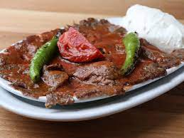

İskender Tarifi

Malzemeler
- Yarım kilo ince çekilmiş dana kıyma
- 1 adet orta boy soğan
- 2 yemek kaşığı yoğurt
- 1 silme tatlı kaşığı tuz
- Kırmızı toz biber, karabiber, kimyon
Yapılışı
Epeydir aklımda olan, yapılmayı bekleyen bir tarif. Sınıfı geçtiğine göre paylaşıp daha fazla sofrada yer almasını sağlayabilirsem ne mutlu :)
- Soğanı temizleyip rondoda çok ince olacak şekilde çekelim.
- Üzerine kıyma, yoğurt, baharat ve tuzu ekleyip rondoda çekmeye devam edelim. Yaklaşık 5 dk. Boyunca rondodan çekelim.
- Streç film üzerine alıp silindir şeklinde rulo yapıp güzelce saralım. Derin dondurucuda 1 gece donduralım.
- Ertesi gün dondurucudan çıkarıp yarım saat kadar kesilecek kıvama gelene kadar bekletelim.
- Hala donuk olan dönerimizi ince ince dilimleyelim.
- Hafif yağladığımız kızgın tavaya direk atıp arkalı önlü kızartalım.
- Dilediğiniz gibi servis edebilirsiniz. AFİYET OLSUN.
NOT;
BEN İSKENDER OLARAK SERVİS ETTİM. BUNUN İÇİN GEREKEN MALZEMELER İNCE BİR PİDE, SALÇALI SOS VE TEREYAĞ. DAHA ÖNCE PAYLAŞTIĞIM PİDELİ KÖFTE TARİFİMDEN DE FAYDALANABİLİRSİNİZ. SEVGİLER.
SAYFADAKİ İÇERİK nefisyemektarifleri SİTESİNDEN ALINMIŞTIR.